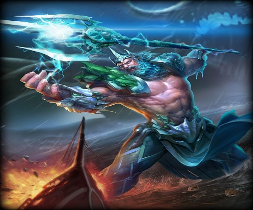

God Of Sea And Earthquake
Poseidon was god of the sea, earthquakes, storms, and horses and is considered one of the most bad-tempered, moody and greedy Olympian gods. He was known to be vengeful when insulted.He is the son of Cronus and Rhea and was swallowed by his father along with HADES, DEMETER, HESTIA and HERA. However, in some folklore stories it is believed that Poseidon, like ZEUS, was not swallowed by Cronus because his mother Rhea who concealed him among a flock of lambs and pretended to have given birth to a colt, which was devoured by CRONUS instead.After the gods defeated the Titans, the world was divided into three and Zeus, Hades and Poseidon drew straws to decide which they would rule. Zeus drew the skies, Hades the underworld, and Poseidon the seas. There is only one reference to this divide, by Homer in the Iliad.